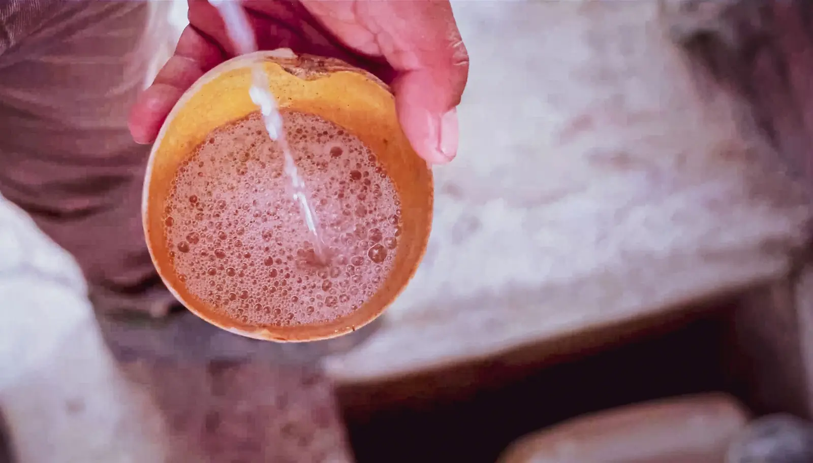
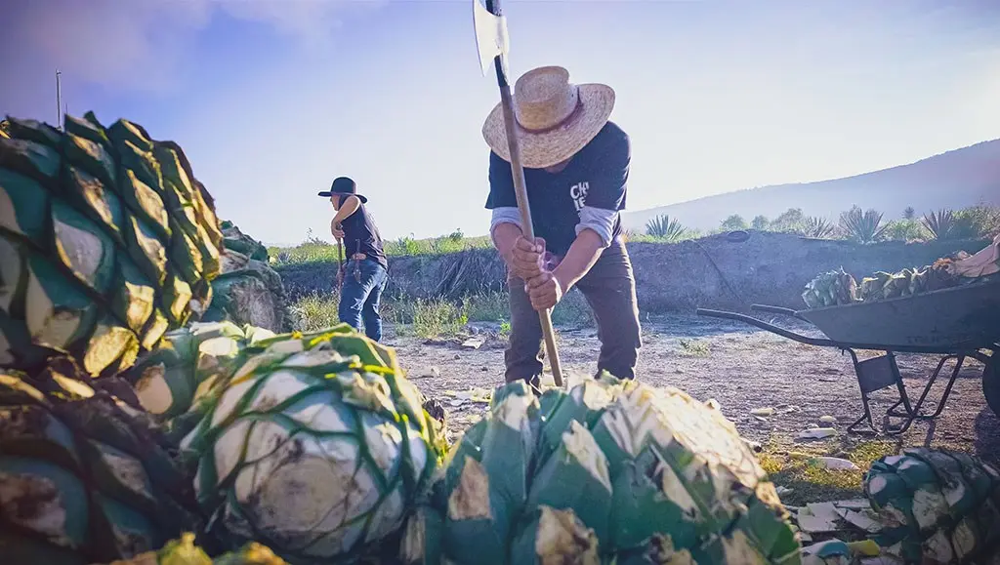

About 150 espadín agave cut by hand in the fields of Benito Ruiz and son Francisco. High 84°F.

Volcanic stone, four days. Opened at a night low of 46°F.

Israel and Isabella the horse, about four hours.

Marigold and cockscomb on every altar. Nights 46–57°F.

Luis Jímenez tests the vats. Clay-sealed copper stills, wood fire.

Above 53% ABV off the still. The spirit is made.
Part of the batch is set apart in Santiago Matatlán. It has not left the barrel since.
The Día de los Muertos joven goes into glass. The añejo does not. It stays in the barrel.
Expected: oak, vanilla, dried fruit, a whisper of smoke. The barrel decides.
One window, by invitation.
Suggested retail $249. Join the reserve list to be told first.
Join the reserve list →Watch the documentary